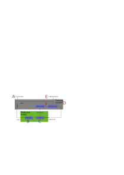
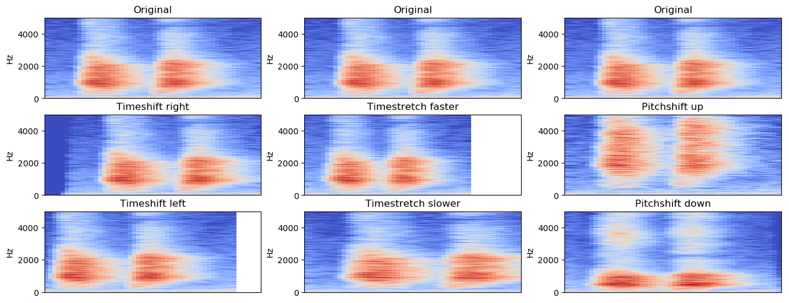
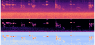

Recognizing sounds with Machine Learning and Python
Jon Nordby jon@soundsensing.no
PyCode 2019, Gdansk
Introduction
Jon Nordby
Internet of Things specialist
- B.Eng in Electronics (2010)
- 9 years as Software developer
- M.Sc in Data Science (2019)
Today
- Consulting on IoT + Machine Learning
- CTO @ Soundsensing.no
Soundsensing
Goal of this talk
a Python programmer
without expertice in sound processing and limited machine learning experience
can solve basic Audio Classification problems
Outline
- Example task. Urban sounds
- Digital sound. A primer
- Audio Classification basics
- Tips & Tricks
- Pointers to more information
Slides and more:
https://github.com/jonnor/machinehearing
Not included
- Running on constrained embedded device
Practical task
Demo video
Problem formulation
Given an audio signal
of environmental sound
determine which class it belongs to
Classification simplifications
- Single output. One class at a time
- Discrete. Exists or not
- Closed set. Must be known class
Supervised Learning
Learning process

Urbansound8k

State-of-the-art accuracy: 79% - 82%
Digital sound primer
Audio Mixtures
Audio acquisition
Digital sound representation
- Quantized in time (ex: 44100 Hz)
- Quantizied in amplitude (ex: 16 bit)
- N channels. Mono/Stereo
- Uncompressed formats: PCM .WAV
- Lossless compression: .FLAC
- Lossy compression: .MP3
Spectrogram

Basic Audio Classification pipeline
Pipeline

Choices… ?
- Window size. How long in time? Problem dependent!
- Spectrogram. Mel-filter, log-scale, standardize.
- Params. ~64 bands. ~25 ms frame hop.
- Model. Convolutional Neural Network.
- Voting. Soft voting
Feature preprocessing
def load_audio_windows(path, ...):
y, sr = librosa.load(path, sr=samplerate)
S = librosa.core.stft(y, n_fft=n_fft,
hop_length=hop_length, win_length=win_length)
mels = librosa.feature.melspectrogram(y=y, sr=sr, S=S,
n_mels=n_mels, fmin=fmin, fmax=fmax)
# Truncate at end to only have windows full data. Alternative: zero-pad
start_frame = window_size
end_frame = window_hop * math.floor(float(frames.shape[1]) / window_hop)
windows = []
for frame_idx in range(start_frame, end_frame, window_hop):
window = mels[:, frame_idx-window_size:frame_idx]
mels = numpy.log(window + 1e-9)
mels -= numpy.mean(mels)
mels /= numpy.std(mels)
assert mels.shape == (n_mels, window_size)
windows.append(mels)
return windowsConvolutional Neural Network
1: Spectrograms are image-like
2: CNNs are best-in-class for image-classification
=> Will CNNs work well on spectrograms?
Yes!
A bit suprising?
SB-CNN

Keras model
from keras.layers import ...
def build_model(...):
block1 = [
Convolution2D(filters, kernel, padding='same', strides=strides,
input_shape=(bands, frames, channels)),
MaxPooling2D(pool_size=pool),
Activation('relu'),
]
block2 = [
Convolution2D(filters*kernels_growth, kernel, padding='same', strides=strides),
MaxPooling2D(pool_size=pool),
Activation('relu'),
]
block3 = [
Convolution2D(filters*kernels_growth, kernel, padding='valid', strides=strides),
Activation('relu'),
]
backend = [
Flatten(),
Dropout(dropout),
Dense(fully_connected, kernel_regularizer=l2(0.001)),
Activation('relu'),
Dropout(dropout),
Dense(num_labels, kernel_regularizer=l2(0.001)),
Activation('softmax'),
]
layers = block1 + block2 + block3 + backend
model = Sequential(layers)
return modelAggregating analysis windows
from keras import Model
from keras.layers import Input, TimeDistributed, GlobalAveragePooling1D
def build_multi_instance(base, windows=6, bands=32, frames=72, channels=1):
input = Input(shape=(windows, bands, frames, channels))
x = input
x = TimeDistributed(base)(x)
x = GlobalAveragePooling1D()(x)
model = Model(input,x)
return modelGlobalAveragePooling -> “Probabilistic voting”
Tips and Tricks
Data Augmentation

- Adding noise. Random/sampled
Mixup. Mixing two samples, adjusting class labelsSpecAugment. Mask spectrogram sections to augment
Transfer Learning from images
Transfer Learning from image data works!
=> Can use models pretrained on ImageNet
Caveats:
- If RGB input, should fill all 3 channels
- Usually need to fine tune the model. Some or all layers
Audio Embeddings
- Model pretrained for sound, feature-extracting only
- Example. Look, Listen, Learn ({L^3}). 1 second, 512-d vector
- Accessible as Python package
OpenL3 - Only need to add a simple classifier on this
- Uses a CNN under the hood
Annotating audio

Outro
Summary 1/3
Try the standard audio pipeline shown!
- Fixed-length analysis windows
- Use log-mel spectrograms as features
- Convolutional Neural Network as model
- Aggregate prediction from each window
Summary 2/3
Start simple!
- Audio Embeddings (OpenL3)
- Transfer Learning from pretrained CNN (ImageNet)
- Train simple CNN from scratch …
Summary 3/3
Use Data Augmentation!
- Time-shift
- Time-stretch, pitch-shift, noise-add
- Mixup, SpecAugment
More learning
Slides and more: https://github.com/jonnor/machinehearing
Hands-on: TensorFlow tutorial, Simple Audio Recognition
Book: Computational Analysis of Sound Scenes and Events (Virtanen/Plumbley/Ellis, 2018)
Thesis
Environmental Sound Classification on Microcontrollers using Convolutional Neural Networks

Questions
Slides and more: https://github.com/jonnor/machinehearing
?
Interested in Audio Classification or Machine Hearing generally? Get in touch!
Twitter: @jononor
Email: jon@soundsensing.no
BONUS
Classification limitations
Out-of-domain data
Interpreting noise
Problem
When audio volume is low, normalization will blow up noise. Can easily cause spurious classifications.
Solution
Compute RMS energy of the input. If RMS low, disregard classifier output, mark as Silence instead.
More advanced problem formulations
Audio Event Detection
Return: time something occurred.
- Ex: “Bird singing started”, “Bird singing stopped”
- Classification-as-detection. Classifier on short time-frames
- Monophonic: Returns most prominent event
Aka: Onset detection
Segmentation
Return: sections of audio containing desired class
- Postprocesing on Event Detection time-stamps
- Pre-processing to specialized classifiers
Tagging
Return: All classes/events that occurred in audio.
Approaches
- separate classifiers per ‘track’
- joint model: multi-label classifier
Details
Analysis windows

Mel-filters

Spectrogram normalization
- log-scale compression
- Subtract mean
- Standard scale

Streaming
Real-time classification
- Global clip/dataset analysis for normalization not possible
Mel-Frequency Cepstral Coefficients (MFCC)
- MFCC = DCT(mel-spectrogram)
- Popular in Speech Detection
- Compresses: 13-20 coefficients
- Decorrelates: Beneficial with linear models
On general audio, with strong classifier, performs worse than log mel-spectrogram
End2End learning
Using the raw audio input as features with Deep Neural Networks.
Need to learn also the time-frequency decomposition, normally performed by the spectrogram.
Actively researched using advanced models and large datasets.
TODO: link EnvNet
Sequence models
Convolutional Recurrent Neural Networks
Bla bla
Why Audio Classification
- Rich source of information
- Any physical motion creates sound
- Sound
- Good compliment to image/video
- Humans use our hearing
Applications
Audio sub-fields
- Speech Recognition. Keyword spotting.
- Music Analysis. Genre classification.
- General / other
Examples
- Eco-acoustics. Analyze bird migrations
- Wildlife preservation. Detect poachers in protected areas
- Manufacturing Quality Control. Testing electric car seat motors
- Security: Highlighting CCTV feeds with verbal agression
- Medical. Detect heart murmurs
- Process industry. Advance process once audible event happens (popcorn)